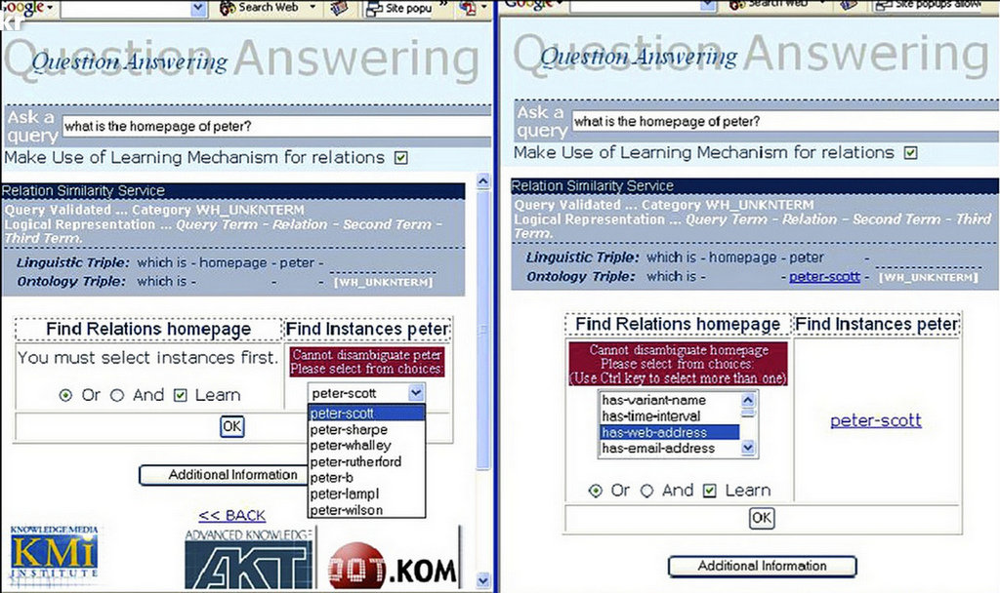

Projects / all / semantic-web / tool
Aqualog
Aqualog: an ontology based question answering system for the semantic web.
- Years
- 2004–2005
- Status
- Completed
- Role
- Component Development

While at the Knowledge Media Institute, I collaborated on the development of Aqualog, a java-based question-answering system which relies on "pluggable" ontological world-models.
In particular, I created a software component which allows the NLP software to learn from a user's interaction and subsequent modify its future behaviour based on these data.
Technology
- Java